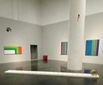
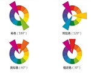

建筑设计
前言
在这里，你可以看到我关于建筑设计、插画设计、色彩搭配的介绍和安利。
2019年参观了清华大学的艺术博物馆，自此爱上了展览里令人惊叹的色彩搭配艺术。简单的色块拼凑起来，却产生了不同寻常的效果，有相同色系的颜色彼此交汇，产生和谐的美感，也有不同色系的颜色相互碰撞，给人视觉上的冲击，颜色的饱和度、亮度都控制得刚好。展览的布景更是让人叹为观止，悬挂的画布、渔网、细竹签、白绳相互搭配，设计感浑然天成。建筑主题展里呈现了梁思成绘制的图纸、建筑系同学几十年前的上课内容和创作作品，复古感和现代感融合相生，艺术与理性同行。还有敦煌壁画展、抽象画展，都值得细细品味。
2020年参与了清华大学工科营建筑营，又一次大开眼界。建筑学同学们的画室、雕刻室很有真实感。期间，我们体验制作了以“满月”为主题的建筑小模型，并绘制了相关图纸。建筑营对画画光线、阴影、构图的要求并不是特别高，关键要在作品中体现自己的想法，做有创意有想法懂艺术的人。
说到服装的色彩搭配，我更推荐简朴风的衣服，用基础款搭出不一样的感觉。可以尽量选择饱和度低的衣服，避免颜色太过鲜艳与皮肤颜色不协调，使人看上去很低沉或很没有精神。同时，应该注意服装色彩的变化，全身同色不一定能带来好的效果，但是不要掺入太多不一样的颜色，避免花里胡哨，以两三色左右为宜。可以增加帽子、眼睛、手表来对全身的搭配做细微的调节。（图片选自知乎答主“型爷”）
我要安利“建筑手绘”这个公众号，这里有建筑快题设计的优秀案例，从户外景观到名胜古迹，从传统村落到现代城市，这里应有尽有。线条、透视、比例、画面层次、配景、地面，这里都一一列出。你既可以在这个公众号大饱眼福，也可以在这里自我学习，这里是建筑的小天地。

自我认知
长相尚可，身高不高，生活精致，言谈质朴有趣，性格善良恬淡，性情稍懒惰，有拖延症。智商挺高，乐于观察自然，学习能力强，统领能力不错。喜欢设计插画，建筑搭配，游山玩水，不喜欢玩游戏。希望能成为优秀的人，过浪漫的生活，从事与设计有关的事业，自由表达自我思想
这是林卓凡的升学经历
每一步都跌宕起伏
岁月不居，时节如流。看光阴流淌，分秒无声，我却不知不觉在成长，山河滚烫 ，何是人生理想？
又逢毕业季
那一天我们各奔东西
在遗忘中不舍，醉醒交错，挥别了我的高中生活。世事漫随流水，算来一梦浮生。 等到凤凰花开的时候，我当与你们再会……
初识大千世界
参加清北夏令营，清华大学工科营
第一次与清华北大结下了不解之缘，第一次见证这五彩缤纷的世界， 第一次意识到，自己要走的路还很长……